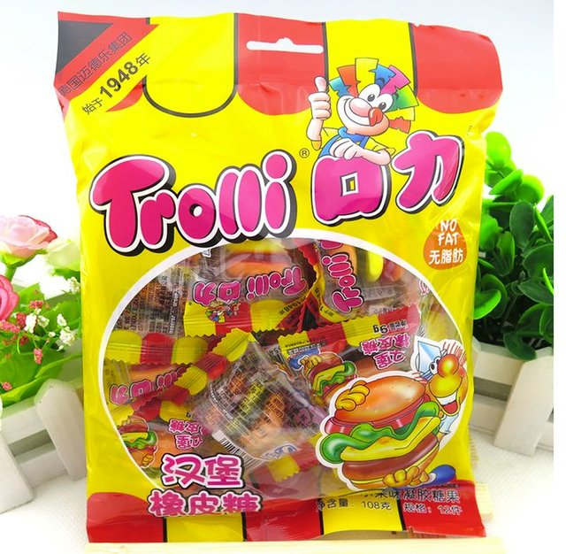
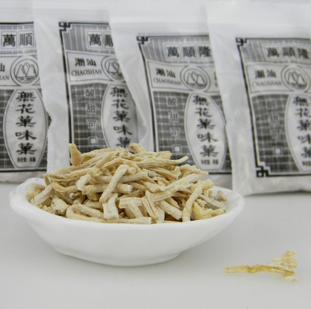
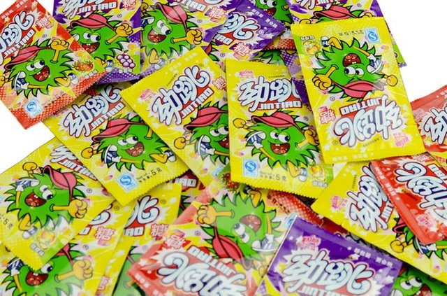
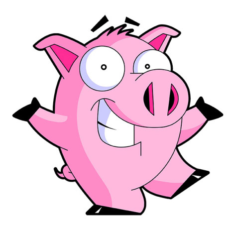

1.Trolli口力·汉堡包橡皮糖*108g 可爱的汉堡包造型，超级Q爽的口感， 清新的水果香味，小卖部是一包一包的卖， 每次只买一个汉堡包，努力想要一层层吃， 吃得久一些，每一口都是童年的味道。
2.万顺隆·无花味果丝*250g小时侯吃过的无花果丝，一直以为是无花果做的。其实是地瓜条和萝卜条~酸酸甜甜的， 还有很多的白色沫在上面，小时候最喜欢干的事就是，吃完无花果把剩下的空袋子吹满气封口， 然后拍爆。袋子发出响亮的一声，然后欢乐的吃下一袋。
3.百达·跳跳糖*30包 小时候超级爱吃的跳跳糖啊，最喜欢几个人买一袋，小心翼翼的伸出舌头，倒上一点跳跳糖，然后捂住嘴巴闭上眼睛，听糖在舌尖上跳舞的声音。无聊的时候互相让对方张开嘴巴，看跳跳糖跳的样子。最爽的就是吃到大粒的，跳跳糖会跳得很厉害，蹦蹦蹦~
   